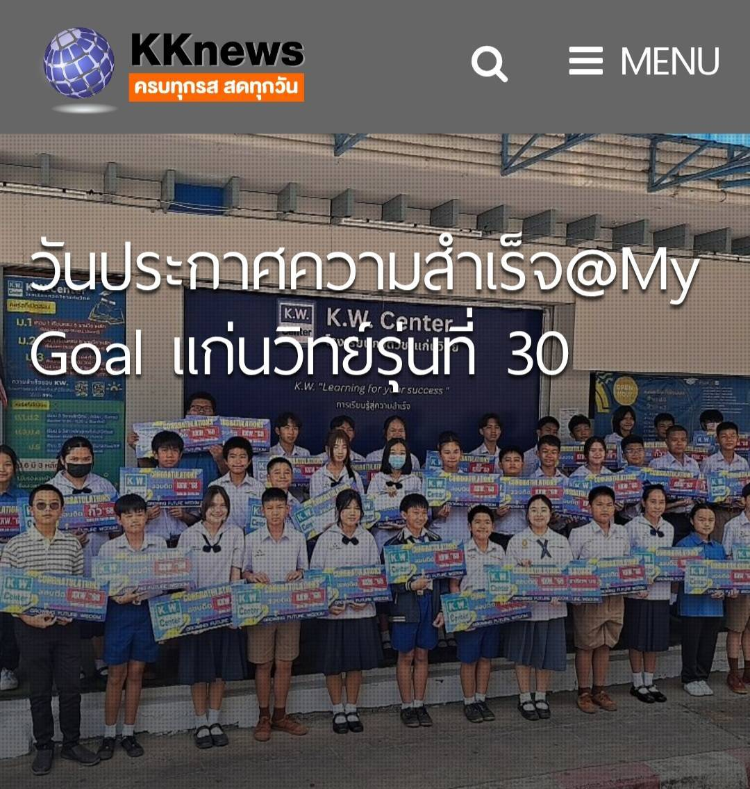
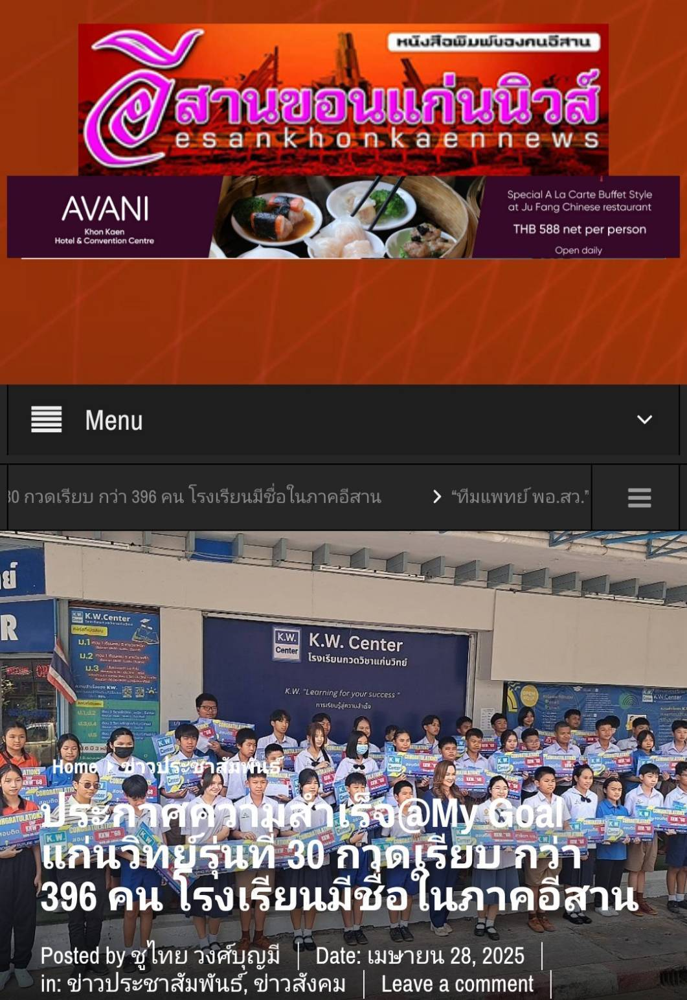
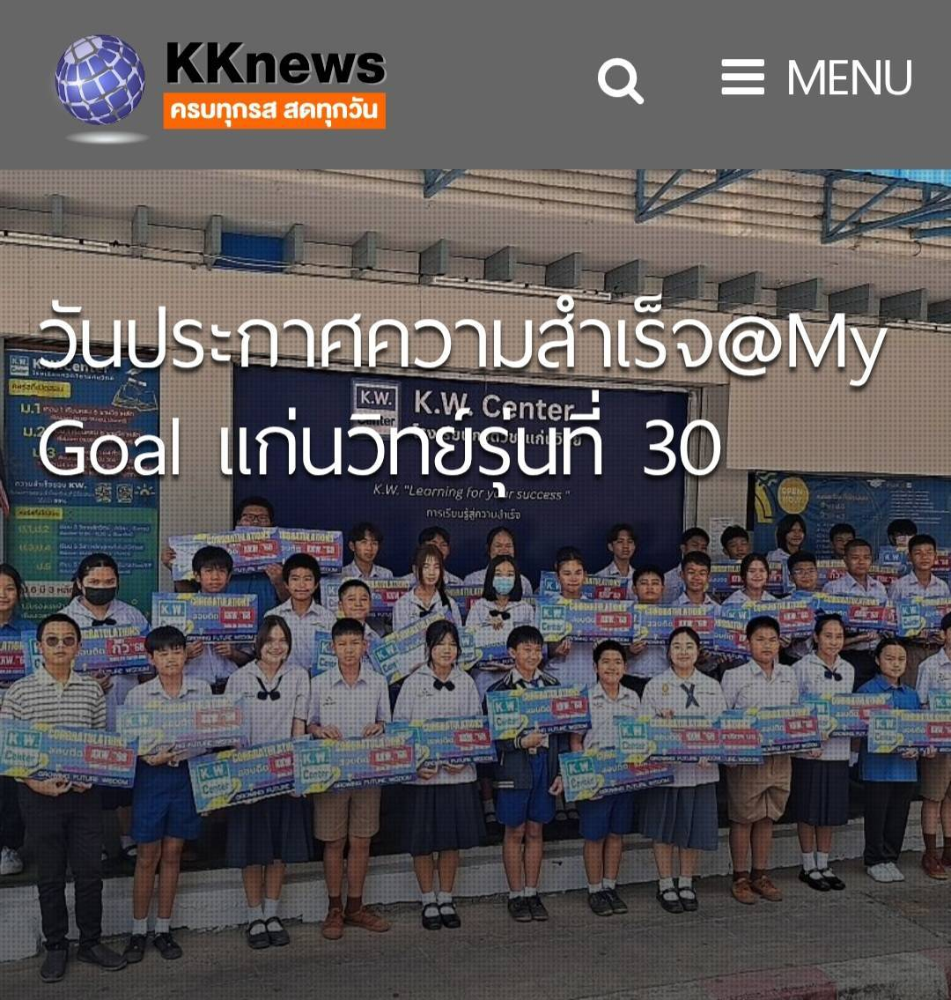
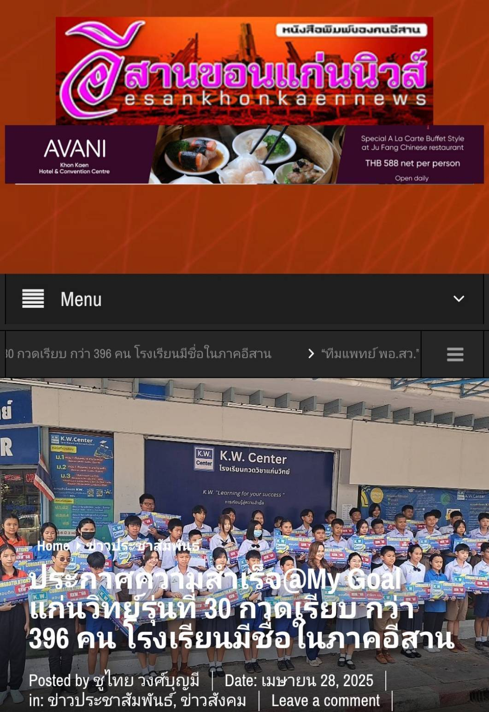


 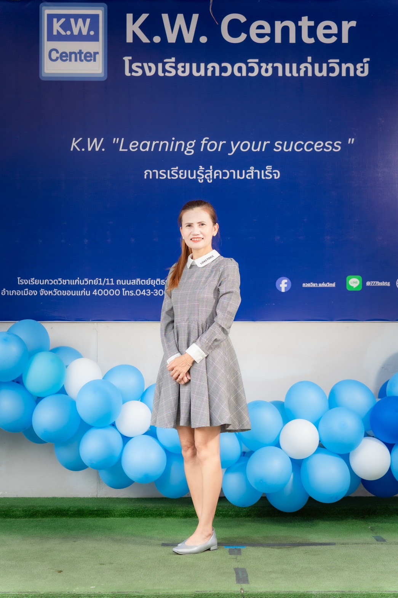
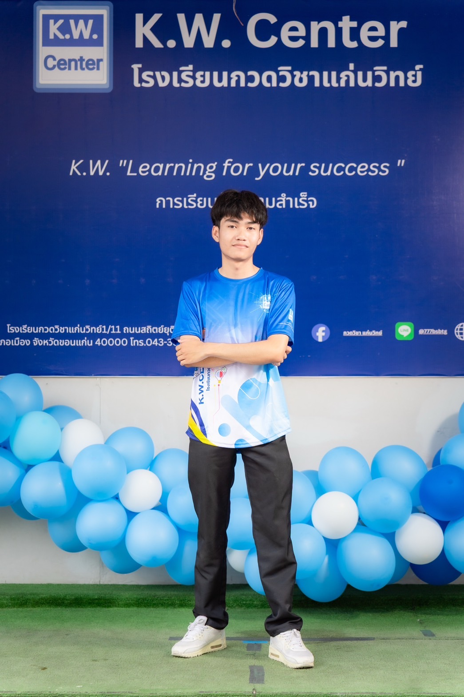
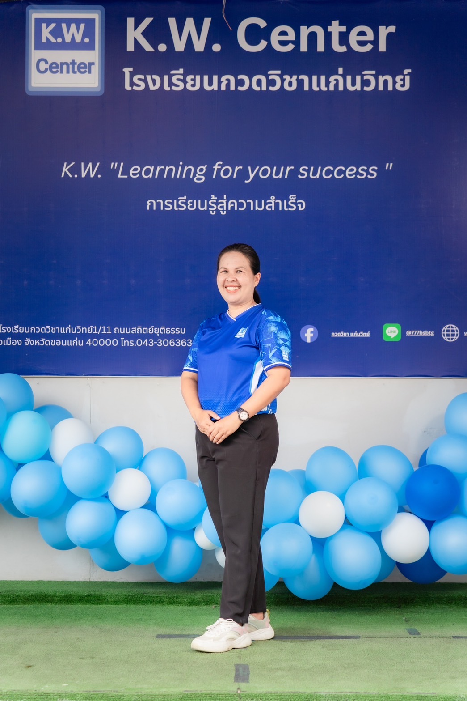
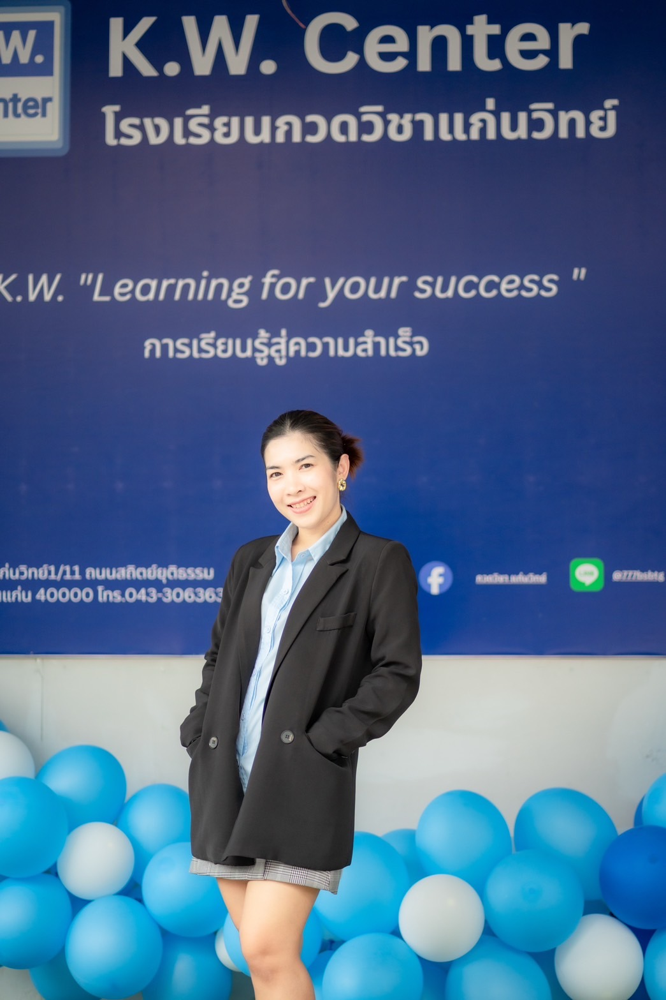
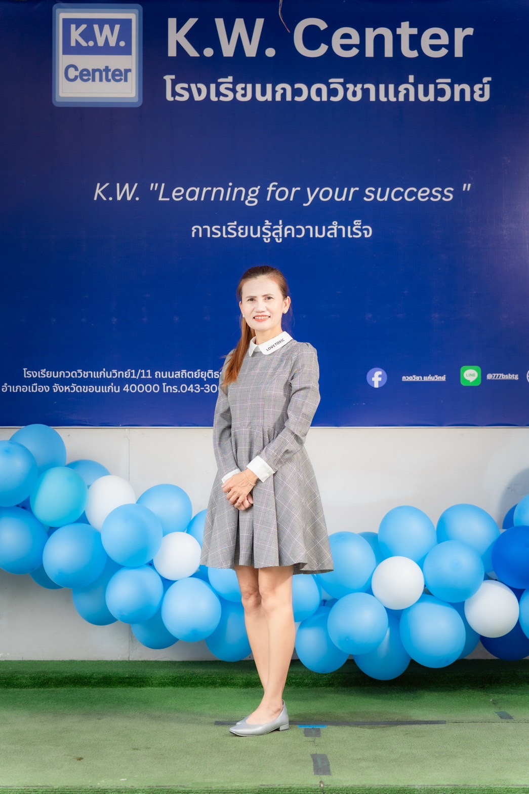
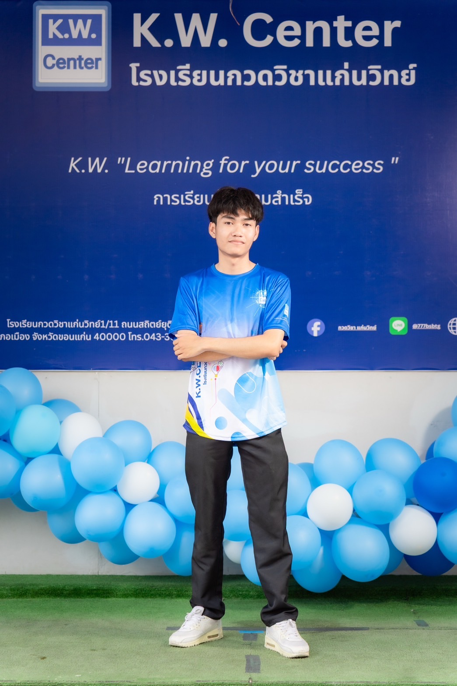
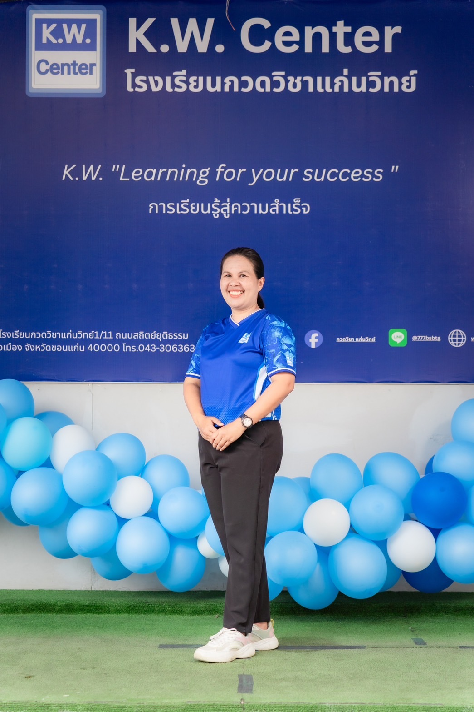
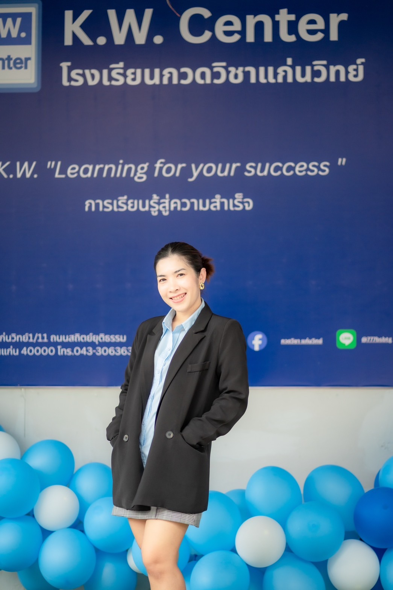
เกี่ยวกับโรงเรียน
โรงเรียนกวดวิชาแก่นวิทย์เปิดสอนตั้งแต่ระดับชั้นประถมถึงมัธยม เพื่อเตรียมสอบเข้าห้องเรียนพิเศษ และเพิ่มเกรดทุกระดับ
โดยทีมอาจารย์ที่มีความเชี่ยวชาญและประสบการณ์การสอน การออกข้อสอบกว่า 26 ปี จากโรงเรียนขอนแก่นวิทยายน
ปูพื้นเทคนิคการทำโจทย์ ตะลุยทำข้อสอบ และประยุกต์การแก้ปัญหาโจทย์ ติวเข้ม เจาะลึก ติวสอบ Gifted, EP ติวสอบทั่วไป เพื่อเตรียมความพร้อมในการเรียน และการสอบเข้า ม.1/ม.4
สมัครเรียนเลย